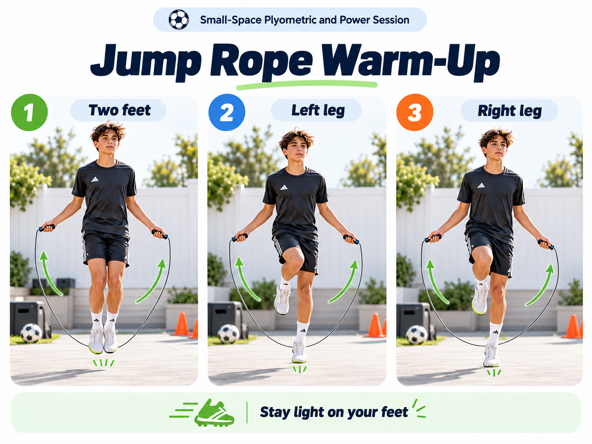

Warm-Up
Jump Rope Progression
- Two feet: 30 seconds
- Left leg: 20-30 seconds
- Right leg: 20-30 seconds
- Rest: 30 seconds
- Total: 2 rounds
Coaching cues: Stay light on the feet, keep jumps small, relax the shoulders and find a smooth rhythm.
Why it helps: Prepares the feet, ankles and calves for faster contacts later in the session.